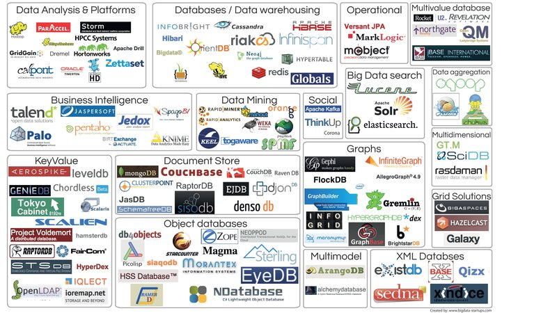
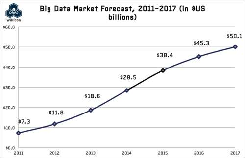

Reactive Principles
in Data Science
A Whirlwind Tour
@TheTomFlahertyAbstract
The plethora of Data Science technologies and Big Data hype are making our heads hurt.
My mantra: Don't let brute force do your thinking for you.
Like everthing in this distributed Information Age, Data Science is changing to meet new demands, with change motivating a new recognition of underlying principles.
So this lightning talk is then a whirlwind tour through these principles. We begin with Business Transformation, REST and NoSQL Databases. We then peak into the future with Grid Gain and Apache Spark and conclude with influence of the Reactive Manifesto.
Outline
- So Many Technologies
- So Much Math
- How Data is Transforming Business
- A 100 fold increase in data volume under URIs
- Join the party with REST URI's
- Visual Guide to NoSQL Systems
- Grid Gain
- Apache Spark - Traditional
- Apache Spark - Revealed
- The Reactive Manifesto:
- - How to be Responsive, Elastic, Resilient and Message Driven
So Many Technologies
So Much Math
How Data will Transform Business
by Philip Evans TED talk on Nov. 2013
- Since the 1970s, business strategy has been dominated by two major theories:
- Bruce Henderson's idea of increasing returns to scale and experience
- Michael Porter's value chain driven by transaction cost reductions
- ... a new force will rule business strategy in the future:
- The massive amount of data shared by competing groups
- The key driver is the 100 fold increase in data placed under URI's in the last 10 years
- Even better: This increases the number of patterns by 10,000 = 100x100 fold
A 100 fold increase in data volume under URIs
Is driving the growth of the ecosystem
The Big Data Market Forecast
Join the party with REST URI's for Data
- REST is the most profound step in becoming Reactively Message Driven
- The Internet itself is the best means of integration with caching as a bonus
- REST is used by all major players: Google Amazon .. Just look at your browser
- Recommend JSON for the transaction "payload"
- Rest URIs Are Easy To Read
- http://company.com/data/database/table/id?query
- Below database="sales" table="cars" id is the last URI parameter
- ?query name value pairs (model="VW") provide nice extensions
| Operation | Method | URI | Database Changes | Return |
|---|---|---|---|---|
| Create | POST | .../sales/cars | Row Created from JSON | ID new |
| Query | GET | .../sales/cars/1 | None | JSON row ID=1 |
| Query | GET | .../sales/cars?model="VW" | None | JSON rows model="VW" |
| Query | GET | .../sales/cars | None | JSON for all rows |
| Update | PUT | .../sales/cars/1 | Row Updated from JSON | ID |
| Delete | DELETE | .../sales/cars/1 | Row Deleted | ID |
Grid Gain / Apache Ignite
A Telepathic In Memory Computing Fabric

Grid Gain / Apache Ignite and Spark
- Both share similar goals but "technologies are different"
- Spark was specially designed for data processing
- Grid Gain is a more generic distributed computation fabric
- that lets you easily farm out arbitrary tasks to nodes
- Grid Gain works on Android since it has a JVM "Dalvik"
- A Grid Gain sensor array has untapped potential
Apache Spark
Traditional View

- Core: Distributed task dispatching, scheduling, and basic I/O
- GraphX: A distributed graph topology for RDDs based on Pregel for Page Rank
- SQL: SchemaRDD a DSL feeding semi? structured data into RDDs
- Streaming: Ingests data in mini-batches for RDD transforms & streaming analytics
- MLlib : Machine Learning Pipeline - Spark's original purpose

- RDD: Resilient Distributed Datasets logically partitioned across servers
- GraphX: Distributed graph topology for RDDs based on Pregel (Page Rank)
- DataFrames: A distributed collection of data organized into named columns
- Databases: Local File System(Standalone) Cassandra MongoDB HDFS JDBC ...
- Streaming: Ingests data in mini-batches for RDD transforms and streaming
- Machine: MLlib Machine Learning Pipeline
- Numerical: Breeze Epic Puck GPU(cuBlas-NVidia) and NetLib-Fortran
- Notebook: A Spark aware notebook in Typesafe's web framework Play
- IPython: The Data Scientist's favorite notebook with PySpark
- SparkR: A light-weight frontend to use Apache Spark from R
- Spark Core: Distributed task dispatching, scheduling, and basic I/O
- Akka: Concurrent, distributed, resilient, message driven, actor based
- Cluster: Standalone, Mesos, Myriad and YARN
The Reactive Manifesto
www.reactivemanifesto.org/
 Responsive: In Memory Always respond meaningfully in a timely manner
Responsive: In Memory Always respond meaningfully in a timely manner Elastic: Cluster Stay responsive under varying workload
Elastic: Cluster Stay responsive under varying workload Resilient: RDD Stay responsive in the face of failure
Resilient: RDD Stay responsive in the face of failure- Message Driven:Streaming Wrap and stream messages asynchronously
Responsive
Always respond meaningfully in a timely manner
- "In Memory" improves performance by 1-2 orders of magnitude
- Formulate meaningful response metrics for Data Science
- Leveage statistics to shrink sample populations
- Weigh benefits between real time and near time
- Keep your common sense
- Don't let brute force do your thinking for you
Elastic
Stay responsive under varying workload
- Elasticity is the key value proposition for cloud hosting
- Leveage Spark's integration with Akka Mesos Myraid and YARN
- Always have spare resources available to spin up for peak demand
- Spend the extra money to replicate data
Resilient
Stay responsive in the face of failure
- Clustered servers and network links fail all the time
- Spark Core monitors and responds to cluster failure
- RDDs "Resilient" Distributed Datasets says it all
- RDDs shard the data over a cluster
- RDDs reconstitute shards lost due to node / link failures
- RDDs in Spark can rerun their transforms to recreate lost data
Message Driven
Wrap and stream messages asynchronously
Message Streams facilitate Data Science with these benefits
| Message Feature | Data Science Benefit |
|---|---|
| Asynchronous | The system knows more about concurrency than humans |
| Error Delegation | Errors become first class citizens that are treated properly |
| Location Transparency | Processes are not locked into specific server configuations |
| Publish & Subscribe | Allows roles to be defined from a Data Science perspective |
| Component Isolation | Allows components to focus on their assigned tasks |
| Loose Coupling | Precise instead of accidental interactions |
| Back Pressure | Message streams can be throttled to relieve resources |
| Functional | A programing paradigm well suited for data processing |
Two Column
References
- Big Data Driving Businesshttp://bit.ly/194auY9
- REST API Tutorialhttp://www.restapitutorial.com/resources.html
- CAP Theoremhttp://en.wikipedia.org/wiki/CAP_theorem
- Grid Gainhttp://www.gridgain.com/
- Apache Sparkhttps://spark.apache.org/
- The Reactive Manifestowww.reactivemanifesto.org/
- These slides in PDFhttps://speakerdeck.com/axiom6